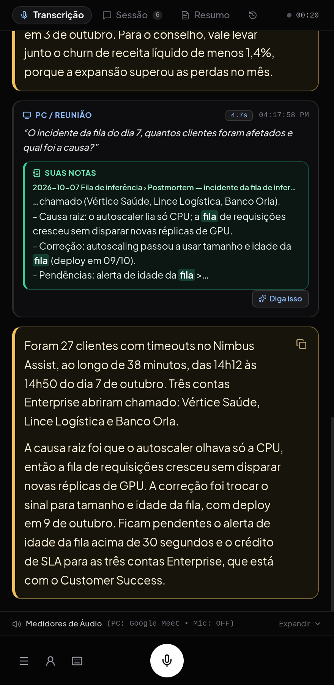

Sidenote
Copiloto desktop para conversas em tempo real. Ele ouve a chamada, transcreve enquanto as pessoas falam, sugere o que responder numa janela flutuante e, no fim, guarda um resumo com decisões e próximos passos. Serve para reuniões, 1:1s, aulas, chamadas de vendas e entrevistas. Roda no Linux e no Windows, é gratuito e de código aberto (licença MIT).
Baixar · Código no GitHub · Política de privacidade

Google Agenda e Docs
Com a conta Google conectada, o Sidenote:
- lê os eventos da sua agenda de agora até amanhã, para você escolher a reunião em andamento e usar o título, os participantes, a descrição e os Google Docs anexados como contexto das sugestões e do resumo;
- lê um Google Docs cujo link você colar, para preencher seu perfil ou a descrição de uma vaga;
- cria no seu Google Drive um Google Docs com o resumo e a transcrição de uma reunião, quando você pede.
Tudo acontece no seu computador: o Sidenote não tem servidor e o desenvolvedor não recebe seus dados. Os detalhes estão na política de privacidade.